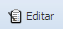
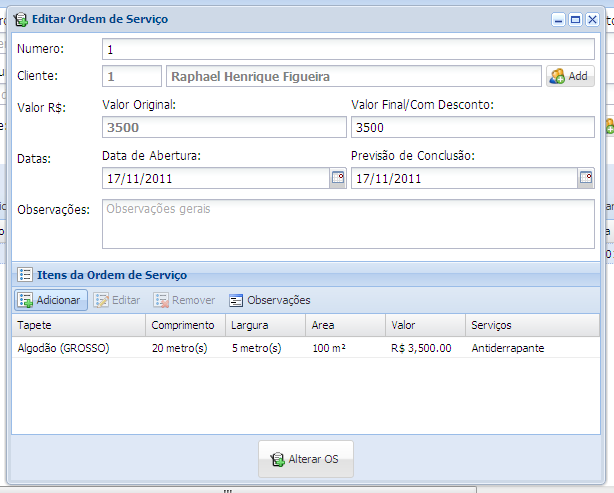
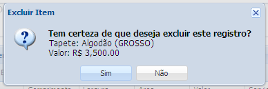
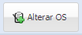

1. Selecione a ordem de serviço que deseja editar
2. Clique no botão Editar

3. Abrirá uma nova janela

Faça as alterações desejadas nos em qualquer campo (com exceção do Código).
4. Caso queira remover um item da ordem de serviço, selecione o meio de contato desejo.
5. Clique no botão Remover
6. Abrirá uma nova janela

Caso você queira excluir definitivamente o item da ordem de serviço selecionado clique no botão Sim caso contrário clique no botão Não.
7. Clique no botão Salvar Alterações para gravar as alterações realizadas
